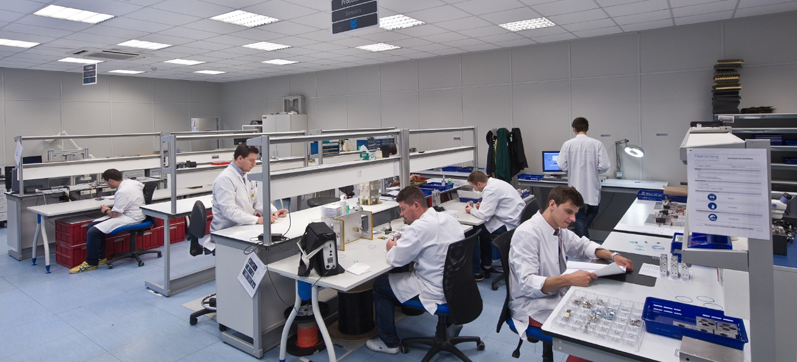

We are Fiber.
One tight relationship that drives us to excellent products.
HBM FiberSensing SA is proud of having addressed hundreds of different monitoring projects around the world and delivered thousands of sensors and measurement units throughout the years.
Founded in 2004 as a pioneer spin-off in this area, the company quickly achieved success, having evolved into a leading producer and provider of optical Fiber Bragg Grating sensors based systems for multiple applications. Today FiberSensing belongs to HBM, a worldwide reference in the area of tests and measurement.
It has become a well-established reference in the market, with several distinctions along the way.
“All the processes are humanized and handled with expertise.”
- 
FBG Technology by FiberSensing®
View how our technology works on this video.
-
Fiber Optic Technology
-
High Multiplexing Capability
-
Multifunctionality
-
Long Distance Transmission
-
EMI/RFI Immunity
-
Electric Isolation
-
Signal Integrity
-
Small Size and Weight
Leadership
These guys are way more than just the names on the building.
Ferreira Director of HBM Optical Business
Villas Boas Head of Finance and Admin
Maia Head of Supply Chain
Araújo Head of R&D Optical solutions
HBM + FiberSensing
— HBM Test and Measurement & FiberSensing: Working together to bring light to measurement
For over 60 years, the name HBM has stood for top performance in test measurement technology. HBM products cover the entire measuring chain - sensors, DAQ systems, software - and provide reliable results customers can trust.
HBM was among the pioneers of electrical strain gauges (SG) and is the world market leader in this segment.
For several years already, HBM has provided its customers with fiber Bragg technology-based optical strain gauges as well; they are in use in many applications throughout the world.
HBM and FiberSensing provide the double benefit of: cutting-edge technology and highly innovative products in the field of optical measurement technology as well as the competence and experience of a worldwide technology leader in test and measurement.
HBM employs over 1,700 staff worldwide and has 7 development and production sites in Europe, China and the USA as well as a global sales and service network, making the company a leading supplier of test and measurement equipment.
HBM is a member of Spectris plc, the precision instrumentation and controls company.
Internationalization
— Total of Exports
FiberSensing operates globally with dozens of customers all over the world, mostly in the USA, China, Brazil, Spain, Switzerland, England, Singapore, Taiwan, Russia, Canada and Australia. Business abroad represents roughly 90% of the total turnover.
Quality
The company’s focus on continuous improvement enables a rapid and efficient response to its customers, which together with the technical know-how and expertise of its co-workers, make FiberSensing excel in the development, production and supply of optical fiber Bragg grating based sensor systems.
This effort goes in line with the company mission, vision and values and is sustained by a continuous Product Development and R&D culture.
History
FiberSensing was founded in April 2004 as a spin-off from R&D Institute INESCTEC Porto. It is a result of more than 20 years of research from a world renowned research group in the area of optical fiber sensors.
2004—2014
Previous Years Next Years-
2014
Acquired by HBM - Test and Measurement, a worldwide reference in this field.
-
2013
Awarded the “PME Líder” label that distinguishes the best SMEs based in Portugal.
-
2011
Distinguished with an Honorable Mention under the scope of Cotec-Unicer Product Innovation Award at the 8th National Meeting on Innovation.
-
2010
Certified in accordance with ISO 9001:2008 standards. Reaches a record of 90% in exports for the first time.
-
2007
Started supplying OEM systems to Siemens Energy, USA.
-
2006
“FS4800 Portable Datalogger“ product awarded for “Best of Sensors Expo Awards”, in Chicago.
-
2005
Set up facilities in Maia, Porto. Won an Ideas Contest, set up to sponsor new technological companies based on innovative ideas.
-
2004
Founded as a spin-off from INESCTEC, Institute for Systems and Computer Engineering, in Porto.